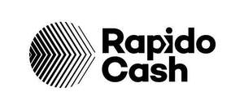

Trade Mark Journal No.2026/006 6 February 2026
UK00004323944 14 January 2026 (9,35,36,42)

- Class 9
- Downloadable software, application software and software platforms for use in relation to financial management, electronic payment, processing of electronic payments, processing of bank card, credit card, debit card and electronic payment card payments, payment services provided via wireless telecommunications apparatus and devices, money transfer, money exchange, foreign currency exchange and transfer and issue, exchange and processing of tokens, coupons and vouchers of value and reading, scanning, identifying and validating of identification data, cards, codes and vouchers; Encoded prepaid payment cards; Apparatus for processing electronic payments; Credit cards; Card readers for credit cards; Electronic card readers; Downloadable electronic publications and reports.
- Class 35
- Database management; Business process management; Advice relating to business information systems; Commercial assistance relating to system implementation and system integration; Operational business assistance to enterprises; Business management consulting services in the field of information technology; Providing an on-line commercial information directory on the internet; Information, advice and consultancy in relation to all the aforesaid services.
- Class 36
- Issue of tokens, coupons and vouchers of value; Electronic payment services; Financial payment services; Processing of electronic payments; Financial pre-payment services; Processing payments for the purchase of goods and services via an electronic communications network; Bank card, credit card, debit card and electronic payment card services; Financial services relating to the provision of vouchers for the purchase of goods; Payment services provided via wireless telecommunications apparatus and devices; Electronic wallet services (payment services); Remote payment services; Payment administration services; Money transfer services; Electronic transfers of money; Money exchange services; Credit fund transfer services; Virtual currency transfer services; Foreign currency transfer services; Foreign currency exchange; Currency exchange rate quotations; Information, advice and consultancy in relation to all the aforesaid services.
- Class 42
- Providing online, non-downloadable software, application software and software platforms for use in relation to financial management, electronic payment, processing of electronic payments, processing of bank card, credit card, debit card and electronic payment card payments, payment services provided via wireless telecommunications apparatus and devices, money transfer, money exchange, foreign currency exchange and transfer and issue, exchange and processing of tokens, coupons and vouchers of value; software, software platform and application software design and development; constructing and hosting internet platforms for payment processing and transfer; integration and linking of computer systems, platforms, software applications and networks; encryption, decryption and authentication of information, messages and data; computerised analysis of data; providing temporary use of on-line non-downloadable software and software platforms for reading, scanning, identifying and validating of identification data, cards, codes and vouchers; providing temporary use of on-line non-downloadable software and software platforms for sales tracking, encryption, decryption and authentication of information, messages and data, commercial analysis and reporting and software application and database integration; electronic data storage; computerised data storage services; information, advice and consultancy in relation to all the aforesaid services; Telecommunication warehousing [computerised data storage and retrieval]; Providing on-line computer databases and on-line searchable databases.
Safe-Voucher Group Ltd
Representative: Trade Mark Direct